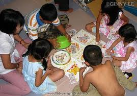
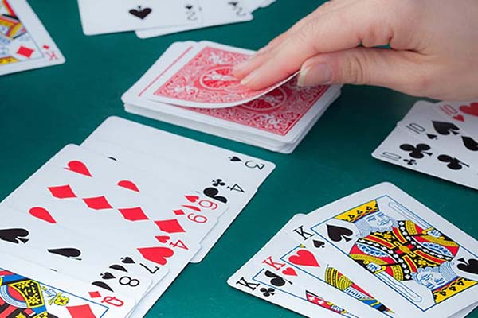
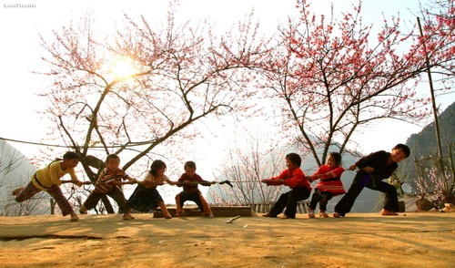

🎮 Trò Chơi Dân Gian Ngày Tết
Trò chơi dân gian là một phần không thể thiếu trong không khí Tết cổ truyền.
Những trò chơi này không chỉ mang lại niềm vui, tiếng cười mà còn gắn kết mọi người,
tạo nên không khí ấm cúng, rộn ràng trong những ngày đầu năm mới.
1. Bầu Cua Cá Cọp
Bầu cua cá cọp (hay bầu cua tôm cá) là trò chơi phổ biến nhất trong dịp Tết,
đặc biệt ở miền Nam và miền Trung.
Cách Chơi:
- Sử dụng 3 viên xúc xắc có 6 mặt, mỗi mặt in hình: bầu, cua, tôm, cá, gà, nai
- Người chơi đặt cược vào các hình trên bàn cược
- Người cầm cái (chủ bàn) lắc xúc xắc
- Nếu hình nào xuất hiện trên xúc xắc, người đặt cược vào hình đó sẽ thắng
- Tiền thắng được tính theo số lần hình xuất hiện
Ý Nghĩa:
- Tạo không khí vui tươi, sôi động
- Mọi người quây quần, tương tác với nhau
- Mang lại may mắn, tài lộc (theo quan niệm dân gian)
- Trò chơi đơn giản, phù hợp mọi lứa tuổi
Lưu Ý:
- Nên chơi với số tiền nhỏ, vui là chính
- Tránh đánh bạc lớn, gây ảnh hưởng đến tài chính
- Giữ tinh thần vui vẻ, không nên quá coi trọng thắng thua
2. Đánh Bài Chòi
Đánh bài chòi là trò chơi dân gian đặc trưng của miền Trung, đặc biệt là các tỉnh từ Quảng Bình đến Bình Định.
Cách Chơi:
- Người chơi ngồi trong các chòi (lều) nhỏ
- Mỗi người nhận một bộ bài (thường 3 quân)
- Người hô bài (anh hiệu) rút từng quân bài và hô tên
- Người chơi nào có quân bài trùng với quân được hô sẽ đánh dấu
- Người nào có đủ 3 quân bài được hô trước sẽ thắng (tới)
Đặc Điểm:
- Trò chơi mang tính văn hóa, nghệ thuật cao
- Anh hiệu hô bài bằng thơ, ca dao, tạo không khí vui nhộn
- Thường tổ chức ở sân đình, sân chùa
- Kết hợp giữa trò chơi và biểu diễn nghệ thuật
Ý Nghĩa:
- Gìn giữ văn hóa dân gian truyền thống
- Tạo không khí lễ hội, vui tươi
- Kết nối cộng đồng, làng xóm
- Giáo dục về văn hóa, lịch sử qua lời hô
3. Kéo Co
Kéo co là trò chơi tập thể, thường được tổ chức trong các lễ hội, đặc biệt là dịp Tết.
Cách Chơi:
- Chia thành 2 đội, mỗi đội nắm một đầu dây
- Kéo dây về phía mình
- Đội nào kéo được đội kia qua vạch giữa sẽ thắng
- Có thể chơi theo nhiều vòng, loại trực tiếp
Ý Nghĩa:
- Thể hiện tinh thần đoàn kết, hợp tác
- Rèn luyện sức khỏe, sự dẻo dai
- Tạo không khí sôi động, vui vẻ
- Gắn kết cộng đồng, làng xóm
4. Ô Ăn Quan
Ô ăn quan là trò chơi dân gian phổ biến của trẻ em Việt Nam, thường chơi trong dịp Tết.
Cách Chơi:
- Vẽ hình chữ nhật trên mặt đất, chia thành 10 ô (5 ô mỗi bên)
- Mỗi ô có 5 viên sỏi (quan)
- Hai người chơi lần lượt rải sỏi từ ô này sang ô khác
- Người nào ăn được nhiều quan hơn sẽ thắng
Ý Nghĩa:
- Rèn luyện tư duy, tính toán
- Giáo dục trẻ em về văn hóa dân gian
- Trò chơi lành mạnh, không cần dụng cụ phức tạp
- Tạo niềm vui cho trẻ em trong dịp Tết
5. Đập Niêu
Đập niêu là trò chơi vui nhộn, thường được tổ chức trong các lễ hội Tết.
Cách Chơi:
- Treo các niêu đất trên cao
- Người chơi bịt mắt, cầm gậy đi về phía niêu
- Đập trúng niêu sẽ nhận được phần thưởng bên trong
- Trò chơi đòi hỏi sự khéo léo và may mắn
Ý Nghĩa:
- Tạo tiếng cười, niềm vui
- Thử thách sự khéo léo, định hướng
- Mang lại phần thưởng may mắn
6. Nhảy Dây
Nhảy dây là trò chơi phổ biến của trẻ em, đặc biệt là các bé gái.
Cách Chơi:
- Hai người cầm hai đầu dây, quay dây
- Người chơi nhảy vào giữa dây, nhảy theo nhịp
- Có nhiều kiểu nhảy: nhảy đơn, nhảy đôi, nhảy theo bài hát
- Người nào vấp dây sẽ bị loại
Ý Nghĩa:
- Rèn luyện sức khỏe, sự dẻo dai
- Tạo niềm vui, tiếng cười
- Kết nối bạn bè, tăng tình đoàn kết
7. Chơi Cờ
Các loại cờ như cờ tướng, cờ vua, cờ vây là trò chơi trí tuệ phổ biến trong dịp Tết.
Đặc Điểm:
- Rèn luyện trí tuệ, tư duy chiến lược
- Phù hợp với người lớn tuổi
- Tạo không khí yên tĩnh, thư giãn
- Kết nối giữa các thế hệ
Ý Nghĩa Tổng Thể Của Trò Chơi Dân Gian
Trò chơi dân gian ngày Tết có ý nghĩa sâu sắc:
- Gìn giữ văn hóa: Bảo tồn những trò chơi truyền thống của dân tộc
- Gắn kết cộng đồng: Tạo cơ hội để mọi người gặp gỡ, giao lưu
- Giáo dục: Dạy trẻ em về văn hóa, truyền thống
- Giải trí lành mạnh: Thay thế các hoạt động không tốt
- Tạo không khí Tết: Mang lại niềm vui, tiếng cười
Lưu Ý Khi Chơi Trò Chơi Dân Gian
- Chơi với tinh thần vui vẻ, không quá coi trọng thắng thua
- Đảm bảo an toàn, đặc biệt với trẻ em
- Tránh đánh bạc lớn, chỉ nên chơi vui là chính
- Giữ gìn và phát huy các trò chơi truyền thống
- Kết hợp giữa trò chơi dân gian và hiện đại

🎲 Bầu Cua
Trò chơi bầu cua cá cọp

🎴 Bài Tết
Đánh bài ngày tết

🪢 Kéo Co
Trò chơi kéo co
Trò Chơi Hiện Đại
Ngày nay, bên cạnh các trò chơi dân gian, còn có nhiều trò chơi hiện đại:
- Trò chơi điện tử, game online
- Karaoke, hát cùng nhau
- Xem phim, nghe nhạc
- Đi du lịch, tham quan
Tuy nhiên, việc gìn giữ và phát huy các trò chơi dân gian vẫn rất quan trọng
để bảo tồn văn hóa truyền thống.